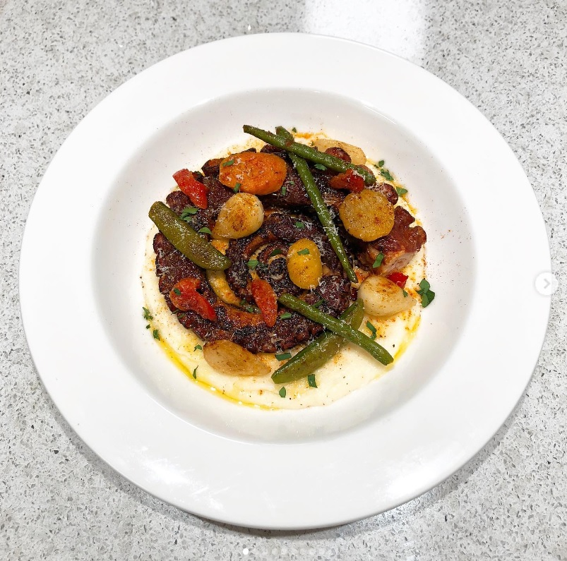
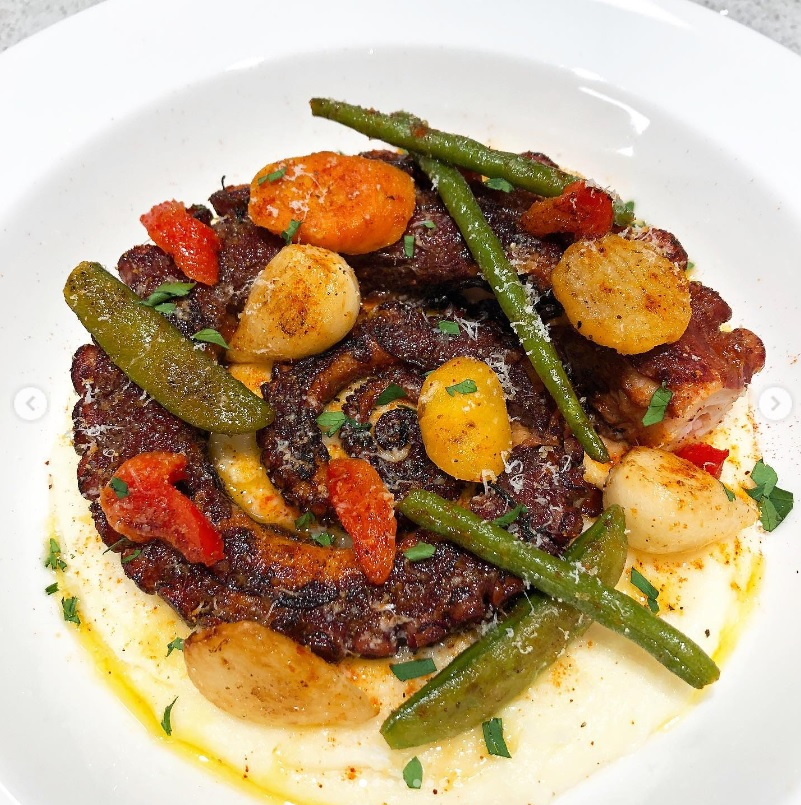
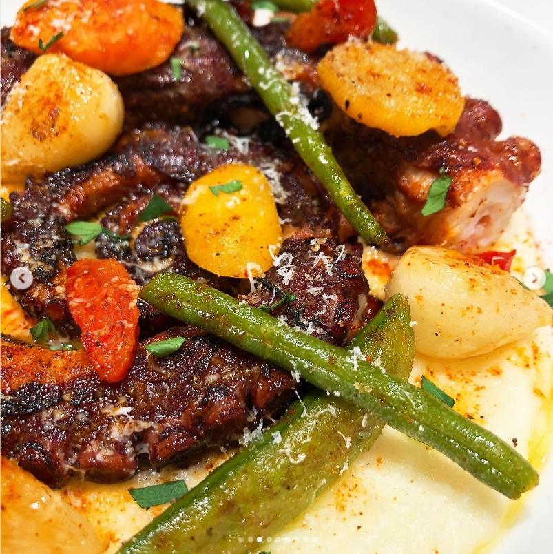

1. 뿔뽀 아뻬랴 (Pulpo á feira)
  
-----------------------------------------------------------------------------------------------------------------
(1) 냄비에 물이 끓으면 월계수 잎, 통후추,
문어다리를 넣어 1시간 이상 끓여줍니다.
(문어다리가 크다면 1시간 30분도 좋습니다.)
(월계수 잎은 15분이 지나면 꺼내줍니다.)
(보글보글 올라올 정도만 중약불에서 끓여줍니다.)
(2) 시간이 지나면 불을 끄고 20분동안 그대로 놔둡니다.
(3) 20분이 지나면 삶은 문어를
건져 얼음물에 빠르게 식혀줍니다.
(겉이 쫄깃해지는 효과)
물기를 어느정도 제거한 뒤
올리브유, 후추, 훈제파프리카 파우더로 버무려줍니다.
(4) 팬에 통마늘을 굽다가 건져줍니다
(5) 마늘기름에 마리네이드 한 문어를 중불에서 구워줍니다.
타임도 같이 넣어 향을 입혀줍니다.
(다 익은 문어이기 때문에 향을 입혀준다는 느낌으로)
(6) 문어를 건져낸 뒤 팬 그대로에
가니쉬로 먹을 야채들을 구워줍니다.
(저는 냉동실에 야채믹스가 있어 활용했습니다.)
(7) 그릇에 감자퓨레를 담고
그 위에 문어다리, 가니쉬용 아채를 올린 뒤
파프리카 가루, 후추, 그라노파다노 치즈, 올리브유,
파슬리, 레몬즙을 살짝 뿌려줍니다.
-----------------------------------------------------------------------------------------------------------------
<감자퓨레>
(1) 감자를 삶아줍니다.
(젓가락으로 눌렀을때 푹푹 들어가는 정도로)
(2) 버터는 감자의 25~50% 양을 준비합니다.
(3) 삶은 감자를 건져 으깨줍니다.
(4) 냄비나 팬에 넣고 약불에서
우유를 조금씩 넣어 농도를 잡아줍니다.
(5) 버터를 섞어줍니다.
(6) 소금을 조금씩 넣어주며 간을 맞춰줍니다.
(7) 체에 한번 걸러줍니다.
(8) 시간이 지나 농도가 뻑뻑해졌다면
마지막 플레이팅 하기전에
약불에서 우유로 농도를 잡아줍니다.
-----------------------------------------------------------------------------------------------------------------
.
.
나무위키, 위키백과, ‘홈퀴진, 이윤정’님의 블로그를 참고했습니다.
https://homecuisine.co.kr/hc25/47959